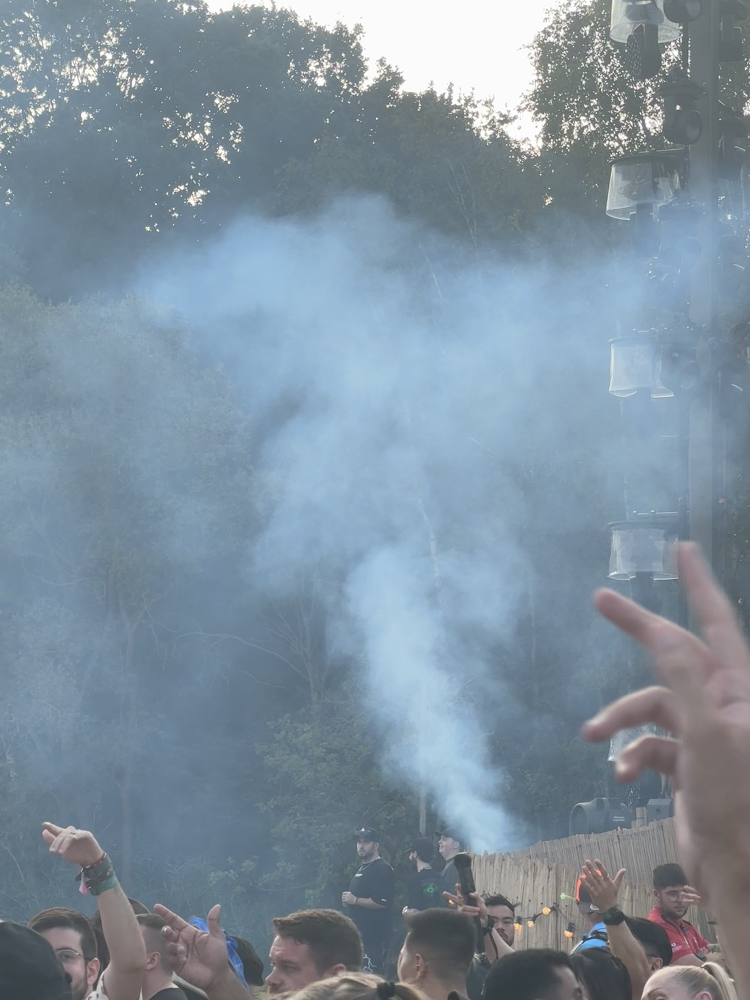
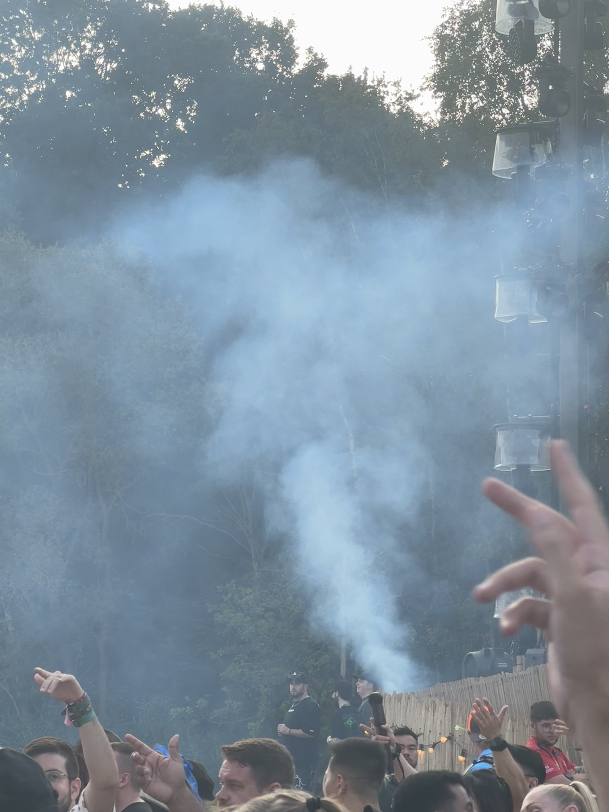
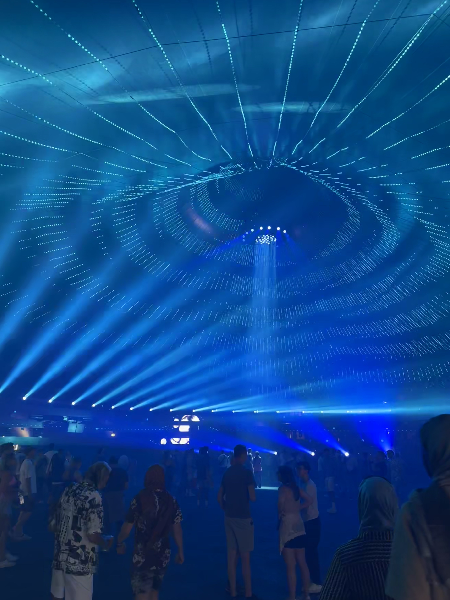
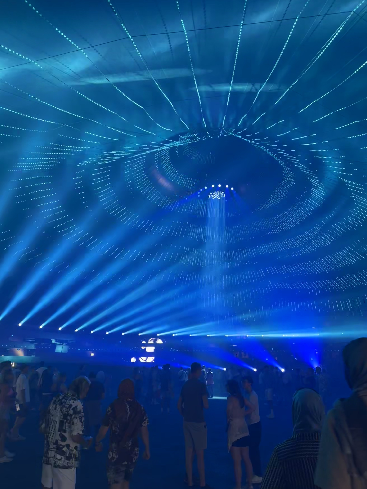

Boom, Belgium

That is a genuine smile exuding pure happiness. This picture captures the first time I saw the full MainStage from the grass hill. The stage is even more remarkable in person as it is both completely massive and intricately detailed. There are LED video screens, and props like flowers, fountains, and statues on it. In the night time lights and lasers make it truly complete. I quickly learned during nighttime sets, the stage gets way too packed. So most of the time I spent at the MainStage was during the day.
Favorite Sets

 

Three of my favorite artists, Camo & Krooked, Dimension, and Wooli, played at the festival, all at different stages. I had never seen Camo & Krooked before, and it was extremely intimate as I got very close to the stage. It was at The Rose Garden stage, which had a huge smoke-breathing dragon above the DJ’s, and the dragon’s wings provided some coverage to the stage. Camo & Krooked were at the same time as Swedish House Mafia so everyone went to the MainStage to see SHM, and Camo & Krooked’s set was empty. They played all my favorite songs by them, and they had an awesome MC named Dxta, who was hilarious and brought huge energy. Dimension has been a favorite artist of mine since 2021. He has multiple emotional anthems that I love. I’ve seen him many times but this setting at the MainStage during the day was special. I was able to get close and experience the front of the MainStage crowd. Wooli is an American dubstep savant. His set was at the Palaxis stage, which effectively served as the dubstep stage. Wooli combined his classic tunes with lots of unreleased new ones. Just an incredible set with tons of mosh pits. Wooli never misses.

I met Blanke after spotting him in the crowd at MainStage. I went up to him for a quick photo and told him how much I love his song Gorgeous with Illenium. One thing that was so cool about Tomorrowland was that the artists walked around the festival and took it all in. I also met Infekt and Imanu, two other artists, that weekend just by spotting them in the crowd and saying hi. Later that night, I caught Blanke’s Aeon-Mode set at the stage hosted by Brownies & Lemonade. I got to go behind the stage, which was so much fun. Blanke has a separate alias, Aeon-Mode, where he produces and plays drum and bass. He is an incredible producer and DJ.
Stages
The second biggest stage was the Library stage. It was very impressive at night time with lasers, lights, and fireworks. I saw Andromedik, Oliver Heldens, and Netsky here. At the end of Netsky, I started leaving 10 minutes early to beat the crowd exiting. However, right as I was walking away, he played one of my favorite songs, “Let Me Hold You,” and I had to run back, dodging people walking out like a football kick returner, and caught the end of the song. They had a memorial for Avicii on one of the books at the stage, which is super important to me and the EDM community. RIP Avicii forever.

This stage looked like a seashell and it overlooked a lake with many floating art pieces. It was outdoors with dirt and rocks as the ground. With all the dancing it got super dusty sometimes and difficult to breathe which was annoying. Beer Man was a Polish guy who didn’t speak much English but that costume made me so happy. I saw Wooli, Ray Volpe, Dirtyphonics, and DVBBS at this stage, all hard bass music.

That’s the dragon from The Rose Garden stage where I saw Camo & Krooked. The thing moved and breathed smoke all night. The other stage is Freedom, which is completely inside with a lofted VIP area and butterflies suspended from the ceiling, which moved up and down and had flapping wings. I saw the Tomorrowland Orchestra at Freedom. A woman I met in Antwerp told me I had to go to the orchestra’s performance. I always tried to listen to people’s recommendations throughout the trip. The orchestra played orchestral covers of classic EDM songs like Don’t You Worry Child by Swedish House Mafia. It was another major highlight of the festival.
 

I only spent a little bit of time at the Core and Atmosphere stages because they were focused on music that is not my favorite. The Core stage had the head split down the middle with the LED screen. It was far off the beaten path in a forest to promote the jungle Tulum vibes, which matched the melodic house music being played there. The other stage, Atmosphere, was a giant tent of lights and vibrations. You could easily get lost in there with the music and vibes. I don’t love the trance music that was being played there. However, I could see that it would be a trance music lover’s heaven.
Overall
10/10 unbelievable experience. I have memories to carry with me for the rest of my life. Maybe nothing will top Tomorrowland 2024 but I will never compare other festivals to this one. It was that good. I appreciated the Tomorrowland motto: “Live Today, Love Tomorrow, Unite Forever”